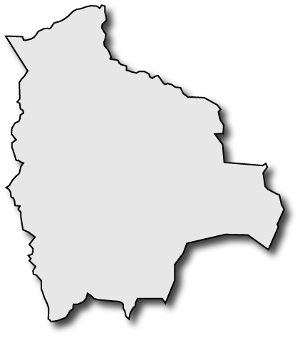
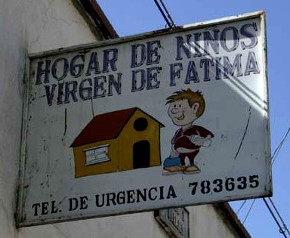

1983
|

|
- Lugar Bolivia
- Nombre ???
- Padres nadie
- Cumpleaños ???
- Fotos nada
|
1983-1985
|

|
- Lugar I. Virgen de Fatima, La Paz
- Nombre Carlos Paredes (c.)
- Padres nadie
- Cumpleaños 23/12/83 (c.)
- Fotos nada
|
1985
|

|
- Lugar Bergamo, Italia
- Nombre Gabriel Remuzzi
- Padres Giuseppe Remuzzi y Manuela Livio
- Cumpleaños 23/12/83 (c.)
- Fotos infinitas !
|
No tengo barba,
pero tengo los ojos de mi padre
Carlos Remuzzi :: 2007 - hoy
Ingeniero Biomedico
por el mundo
- Dharan, Nepal
- London, UK
- La Paz, Bolivia
Bolivia 2010
La busqueda de los orígenes
Un día volverás a Bolivia para ayudar a tu país
Estimado Gabriel:
"Gracias por tu e-mail. Estoy seguro que lograremos concretar algo importante para la salud de la gente marginada de Bolivia.
Espero sus noticias.
Este miércoles 23 de febrero tenemos nuevamente la reunión con el equipo de radiólogos mas importantes de La Paz, para el congreso en la última semana de Agosto 2011. Al respecto les escribo luego.
Un abrazo"
- Raul Plata
"Dear Raul,
after discussing with Luca Antiga in Italy, we reached the conclusion that both me and his company Orobix are very much interested in taking part in the Telemedicine and Image Processing initiatives in Bolivia."
- Carlos Gabriel Remuzzi
openTHS
un sistema open-source para la telemedicina
Asociación Familias del Corazón
miembro de la red mundial Melograno Network
La revelación
Empezó desde el inicio
Sigue pasando
En cada oportunidad
Con anecdotas ...